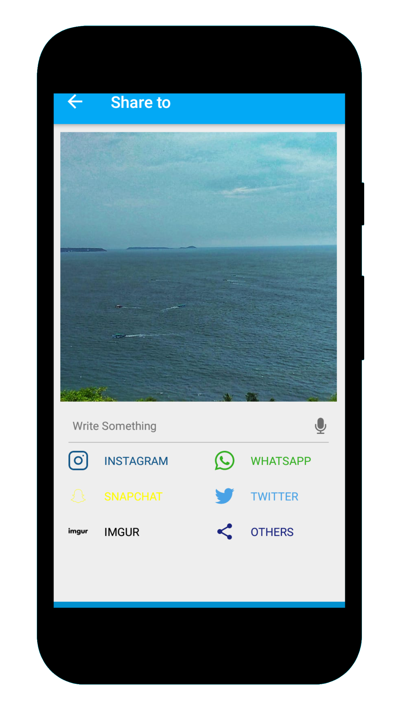
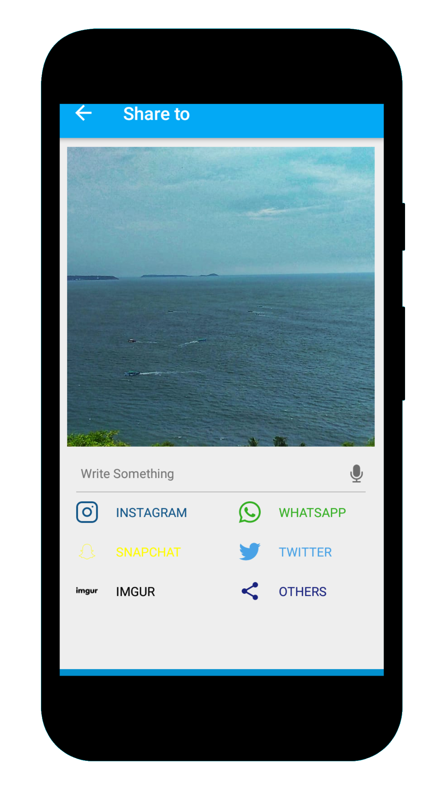

Phimp.me Android¶
Phimp.me is an Android image editor app that aims to replace proprietary photographing and image apps on smart phones. It offers features such as taking photos, adding filters, editing images and uploading them to social networks. Phimp.me stands for Photos - Images - Pictures. It is developed at FOSSASIA together with a global community.
Download from Play Store¶
Screenshots¶

 



Do you have many different apps on your Android Phone for the purpose of clicking, editing and sharing images? Hey, guess what, now you don’t need all of those because Phimp.me is here, with all the features packaged into one. So go and clean your phone memory to save your space for other useful purposes.
Features¶
Click beautiful images using the Phimp.me app. Use various advanced scene modes and variety of balance modes.
You can use your voice actions to invoke Camera, Just say “Ok Google click a picture”. You can also select front and rear camera based on voice.
Browse the local gallery inside the app with folder and all photos mode. Copy, move and add a description to the images.
Edit images with various cool filters with optimized performance, built using OpenCV library.
Enhance contrast, hue, Satur, temp, tint, and sharpness of the image.
Use ‘Crop and rotate’ features from Transform section to get your perfect image.
Apply different stickers - facial, express, objects, comments, wishes, emojis, hashtag
Write anything on the images in your handwriting!
Don’t be afraid to experiment as you can easily go back and forth with ‘redo’ and ‘undo’.
Finally, after all this editing you can easily share the image to your favourite social media sites with our easy-to-use sharing feature.
Facebook, Messenger, Twitter, NextCloud, OwnCloud, Imgur, Dropbox, Box, Flickr, Pinterest, Instagram, Whatsapp, and Tumblr - You name it and we have it covered.
How to Contribute¶
This is an Open Source project and we would be happy to see contributors who report bugs and file feature requests by submitting pull requests as well.This project adheres to the Contributor Covenant. By participating, you are expected to uphold this code style. Please report issues here https://github.com/fossasia/phimpme-android/issues
Branch Policy¶
We have the following branches
- development
All development goes on in this branch. If you’re making a contribution, you are supposed to make a pull request to development. Make sure it passes a build check on Travis
It is advisable to clone only the development branch using the following command:
git clone -b <branch> <remote_repo>Example:
git clone -b my-branch git@github.com:user/myproject.gitAlternative (no public key setup needed):
git clone -b my-branch https://git@github.com/username/myproject.gitWith Git 1.7.10 and later, add –single-branch to prevent fetching of all branches. Example, with development branch:
git clone -b development --single-branch https://github.com/username/phimpme-android.git
master This contains the stable code. After significant features/bugfixes are accumulated on development, we move it to master.
apk This branch contains automatically generated apk file for testing.
gh-pages For reference gh-pages branch is hosting the Gihub-Pages link for this Repo at https://fossasia.github.io/phimpme-android/
Development Setup¶
Before you begin, you should have already downloaded the Android Studio SDK and set it up correctly. You can find a guide on how to do this here: Setting up Android Studio
Setting up the Android Project¶
Download the phimpme-android project source. You can do this either by forking and cloning the repository (recommended if you plan on pushing changes) or by downloading it as a ZIP file and extracting it.
Install the NDK in Android Studio.
Open Android Studio, you will see a Welcome to Android window. Under Quick Start, select Import Project (Eclipse ADT, Gradle, etc.)
Navigate to the directory where you saved the phimpme-android project, select the root folder of the project (the folder named “phimpme-android”), and hit OK. Android Studio should now begin building the project with Gradle.
Once this process is complete and Android Studio opens, check the Console for any build errors.
Note: If you receive a Gradle sync error titled, “failed to find …”, you should click on the link below the error message (if available) that says Install missing platform(s) and sync project and allow Android studio to fetch you what is missing.
Download this OpenCV-android-sdk zip file and extract it.
Copy all the files from “OpenCV-android-sdk/sdk/native/3rdparty” to “phimpme-android/app/src/main/3rdparty” (create directory if it doesn’t exist)
Copy all the files from “OpenCV-android-sdk/sdk/native/libs” to “phimpme-android/app/src/main/jniLibs” (create directory if it doesn’t exist)
Copy all the files from “OpenCV-android-sdk/sdk/native/jni/include” to “phimpme-android/app/src/main/jni/include” (create directory if it doesn’t exist)
Copy all the files from “OpenCV-android-sdk/sdk/native/staticlibs” to “phimpme-android/app/src/main/staticlibs” (create directory if it doesn’t exist)
Now build your project. If your build fails then try deleting these build directories “phimpme-android/app/.externalNativeBuild” and “phimpme-android/app/build”, if they exist and run the build again.
If build error still persist, try replacing ndk with ndk version 18b from ndk-archives . Once all build errors have been resolved, you should be all set to build the app and test it.
To Build the app, go to Build > Make Project (or alternatively press the Make Project icon in the toolbar).
If the app was built successfully, you can test it by running it on either a real device or an emulated one by going to Run > Run ‘app’ or pressing the Run icon in the toolbar.
To enable the sharing features to a different account, add API_KEY/ APP_ID associated with accounts. Add the Keys in
constant.javaandstrings.xml. Following are the links to developer pages of account. Go there to create apps and get keys.Nextcloud: https://docs.nextcloud.com/server/stable/developer_manual/
Twitter: https://dev.twitter.com
Pinterest: https://developers.pinterest.com
Owncloud: https://doc.owncloud.org/server/10.0/developer_manual/
Imgur: https://apidocs.imgur.com/
Dropbox: https://www.dropbox.com/developers
License¶
This project is currently licensed under the GNU General Public License v3. A copy of LICENSE is to be present along with the source code. To obtain the software under a different license, please contact FOSSASIA.
Change Log (Commits)¶
build(deps): bump twitter from 3.0.0 to 3.3.0 by dependabot-preview[bot] at 2020-02-17 21:24:44
Bumps twitter from 3.0.0 to 3.3.0. Signed-off-by: dependabot-preview[bot] <support@dependabot.com>
build(deps): bump rootProject.butterknifeVersion from 10.2.0 to 10.2.1 (#3012) by dependabot-preview[bot] at 2020-02-16 06:46:41
Bumps `rootProject.butterknifeVersion` from 10.2.0 to 10.2.1. Updates `butterknife` from 10.2.0 to 10.2.1 - [Release notes](https://github.com/JakeWharton/butterknife/releases) - [Changelog](https://github.com/JakeWharton/butterknife/blob/master/CHANGELOG.md) - [Commits](https://github.com/JakeWharton/butterknife/compare/10.2.0…10.2.1) Updates `butterknife-compiler` from 10.2.0 to 10.2.1 - [Release notes](https://github.com/JakeWharton/butterknife/releases) - [Changelog](https://github.com/JakeWharton/butterknife/blob/master/CHANGELOG.md) - [Commits](https://github.com/JakeWharton/butterknife/compare/10.2.0…10.2.1) Signed-off-by: dependabot-preview[bot] <support@dependabot.com>
build(deps): bump browser from 1.0.0 to 1.2.0 (#3014) by dependabot-preview[bot] at 2020-02-15 16:15:54
Bumps browser from 1.0.0 to 1.2.0. Signed-off-by: dependabot-preview[bot] <support@dependabot.com>
build(deps): bump material from 1.0.0 to 1.1.0 (#3015) by dependabot-preview[bot] at 2020-02-15 12:38:24
Bumps [material](https://github.com/material-components/material-components-android) from 1.0.0 to 1.1.0. - [Release notes](https://github.com/material-components/material-components-android/releases) - [Commits](https://github.com/material-components/material-components-android/compare/1.0.0…1.1.0) Signed-off-by: dependabot-preview[bot] <support@dependabot.com>
build(deps): bump twitter4j-media-support from 3.0.5 to 4.0.6 (#3013) by dependabot-preview[bot] at 2020-02-09 09:12:27
Bumps [twitter4j-media-support](https://github.com/yusuke/twitter4j) from 3.0.5 to 4.0.6. - [Release notes](https://github.com/yusuke/twitter4j/releases) - [Commits](https://github.com/yusuke/twitter4j/compare/3.0.5…4.0.6) Signed-off-by: dependabot-preview[bot] <support@dependabot.com>
build(deps): bump leakcanary-android-no-op from 1.5.1 to 1.6.3 (#3011) by dependabot-preview[bot] at 2020-02-06 18:30:38
Bumps [leakcanary-android-no-op](https://github.com/square/leakcanary) from 1.5.1 to 1.6.3. - [Release notes](https://github.com/square/leakcanary/releases) - [Changelog](https://github.com/square/leakcanary/blob/master/docs/changelog.md) - [Commits](https://github.com/square/leakcanary/compare/v1.5.1…v1.6.3) Signed-off-by: dependabot-preview[bot] <support@dependabot.com>
build(deps): bump android-gif-drawable from 1.2.7 to 1.2.19 (#3009) by dependabot-preview[bot] at 2020-02-06 16:55:58
Bumps [android-gif-drawable](https://github.com/koral–/android-gif-drawable) from 1.2.7 to 1.2.19. - [Release notes](https://github.com/koral–/android-gif-drawable/releases) - [Changelog](https://github.com/koral–/android-gif-drawable/blob/dev/CHANGELOG.md) - [Commits](https://github.com/koral–/android-gif-drawable/compare/v1.2.7…v1.2.19) Signed-off-by: dependabot-preview[bot] <support@dependabot.com> Co-authored-by: Yash Khare <yashsja@gmail.com>
build(deps): bump annotations-java5 from 15.0 to 18.0.0 (#3008) by dependabot-preview[bot] at 2020-02-06 14:47:35
Bumps [annotations-java5](https://github.com/JetBrains/java-annotations) from 15.0 to 18.0.0. - [Release notes](https://github.com/JetBrains/java-annotations/releases) - [Commits](https://github.com/JetBrains/java-annotations/commits/18.0.0) Signed-off-by: dependabot-preview[bot] <support@dependabot.com>
build(deps): bump rootProject.glideVersion from 4.10.0 to 4.11.0 (#3001) by dependabot-preview[bot] at 2020-01-30 08:32:34
Bumps `rootProject.glideVersion` from 4.10.0 to 4.11.0. Updates `glide` from 4.10.0 to 4.11.0 - [Release notes](https://github.com/bumptech/glide/releases) - [Commits](https://github.com/bumptech/glide/compare/v4.10.0…v4.11.0) Updates `gifencoder-integration` from 4.10.0 to 4.11.0 - [Release notes](https://github.com/bumptech/glide/releases) - [Commits](https://github.com/bumptech/glide/compare/v4.10.0…v4.11.0) Signed-off-by: dependabot-preview[bot] <support@dependabot.com>
build(deps): bump ion from 2.1.7 to 3.0.8 (#3000) by dependabot-preview[bot] at 2020-01-30 08:17:46
Bumps [ion](https://github.com/koush/ion) from 2.1.7 to 3.0.8. - [Release notes](https://github.com/koush/ion/releases) - [Changelog](https://github.com/koush/ion/blob/master/CHANGELOG.md) - [Commits](https://github.com/koush/ion/commits) Signed-off-by: dependabot-preview[bot] <support@dependabot.com>